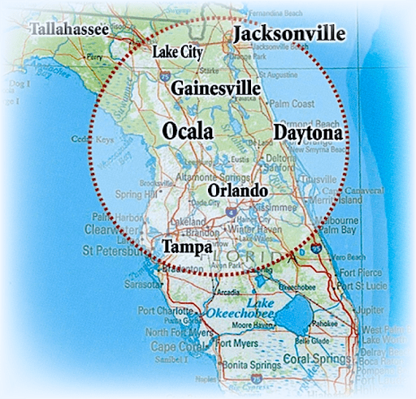

- I enjoy playing sports , and could definitely see myself coaching a team one day.
- I love to read, other than scrolling social media, I'am usually scrolling different articles, looking for different ways to stay sharp.
- If wasn't pursuing a career in engineering, than i would could see myself in the sports medicine field or maybe even neurology, to get a deeper understanding of how the brain really works.
Intro
Hi I'am Nazzara, a software engineer living in Ocala,Fl!
I'm originally from New Jersey but moved to Ocala as a child and have been here since. I am made up of mainly spanish-african american descent, graduated high school here in central florida in 2011.
I'm currently living in Ocala which is central to Florida and currently the horse capital of the world!! It is a very peaceful place to live and home to a good amount of hollywood superstars, you might even see them walking about! Check it out! 
About Me
I feel like everyone has some sort of attachment to programming, as it is the foundation on which this modern world has extended upon in these most recent years. My passion could be measured by the amount of time that I have invested in computers in general, nearly half of my life. I love vidoe games as much as anyone else and have spent many hours doing that. These points though, lots of people can claim as their own. For me the difference is the love for the technicalities. Programming is a very tedious task, lots of hours spent in front of the screen, and any little thing , literally can cause an error. It really is a love hate relationship, and I am still here, after many hours of failure an success. If you just beginning coding today, dont let this discourage you though, but try to really understand that last sentence.
People? Where would I be without them? I can't count how many times I have depended on coders over the world wide web for help with my own code. Coding is very tedious, so there's always something someone in the world can help with, and vice-versa. If it wasn't for websites like Stack-Overflow and Reddit, im not sure if I would have a career at all.